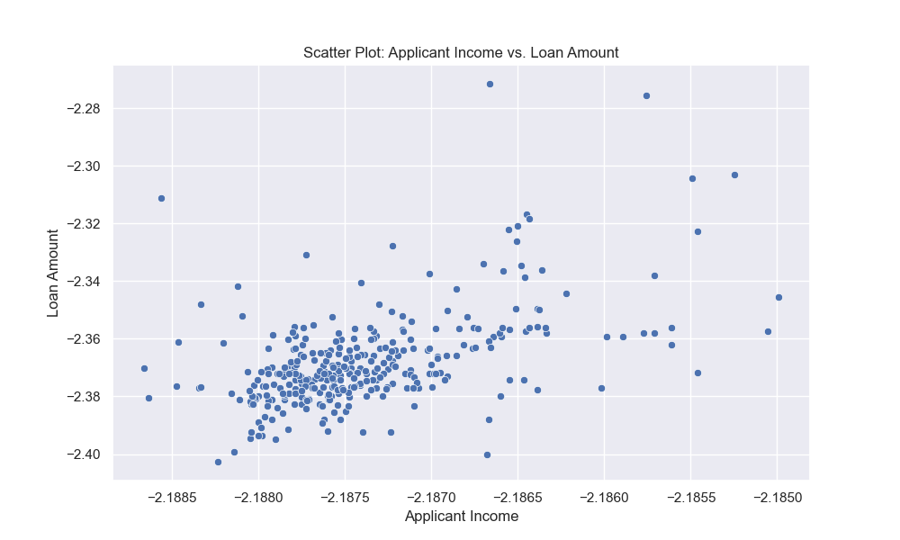

We solve this proplem by replacing Null value or missing value
by put a real value In categorical columns, we can fill in missing values with the mode of each column.
and We can fill in the missing values of the loan amount column with the median value.
After solving
We see no null value in any column in dataset
2- Outliers
Outliers in a dataset are data points that significantly deviate from the majority of the other values.
They can be either unusually high or unusually low compared to the rest of the data
After Solving
We was used The interquartile (IQR) method of outlier detection uses 1.5 as its
scale to detect outliers because it most closely follows Gaussian distribution. As a result,
the method dictates that any data point that's
1.5 points below the lower bound quartile or above the upper bound quartile is an outlier
3- Standardization transforms of data
We was used The StandardScaler model to removes the mean and scales the data to unit variance.
The scaling shrinks the range of the feature values as shown in the left figure below. However, the outliers have
an influence when computing the empirical mean and standard deviation
After Solving

4- The Strange Data
We found a strange data like +3 in Dependents so we use LabelEncode model for processing this
and we convert categorical column into numerical
ones by using the model